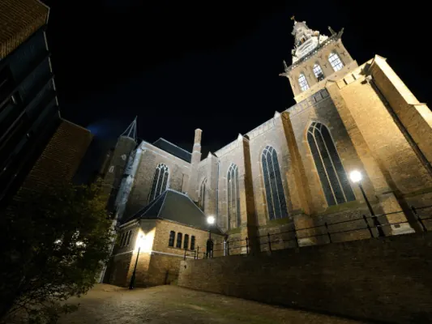
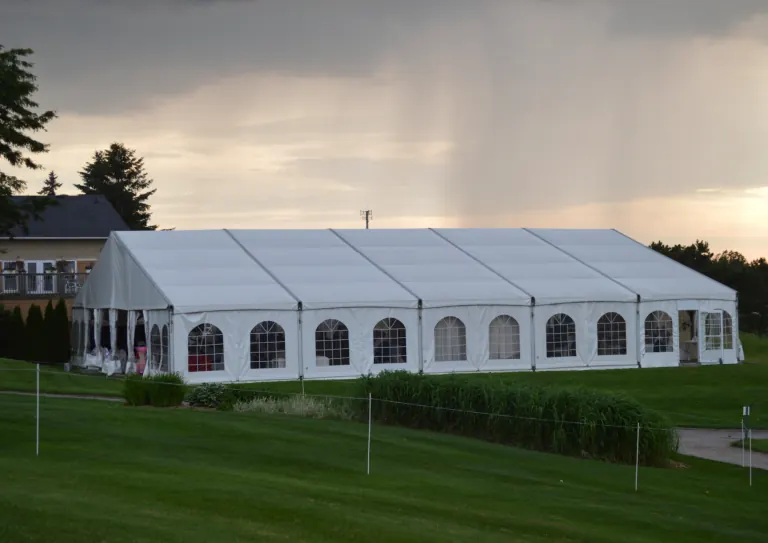
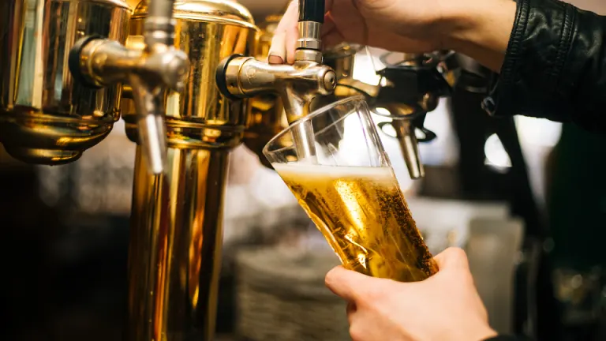
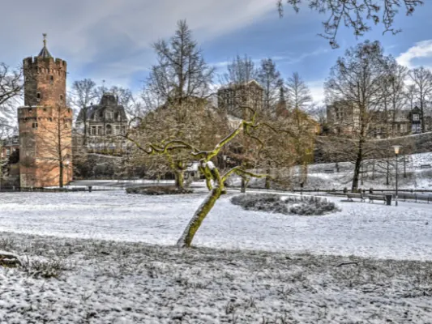
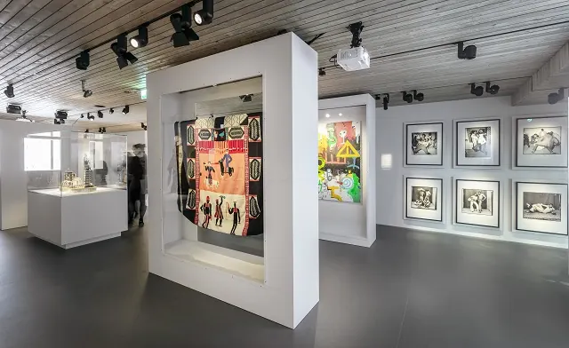

Wat zijn de meest bekende kerken in Nijmegen?
De stad Nijmegen telt vele kerken. Elke kerk heeft zijn eigen oorsprong en geschiedenis: van vrij recent, tot lang geleden of juist al van eeuwen geleden…
Musea, bioscopen, kerken, dansscholen en het uitgaansleven: zo beleef je de cultuur van de oudste stad van Nederland.

De stad Nijmegen telt vele kerken. Elke kerk heeft zijn eigen oorsprong en geschiedenis: van vrij recent, tot lang geleden of juist al van eeuwen geleden…
Nijmegen telt drie bioscopen, waarvan twee in het centrum en één in Nijmegen-Noord. Een avondje uit naar een van deze gezellige filmzalen kan goed…

Dansen is weer helemaal hip. Jongeren, dertigers, ouderen en koppels: steeds meer mensen gaan op dansles. Het is gezellig, uitdagend en ook nog eens…

Nijmegen bruist het hele jaar door van cultuur. Van openluchtconcerten aan de Waalkade en kleinschalige kunstmarkten in het centrum tot de grote…

Uitgaan in Nijmegen is niet zo moeilijk. Je kunt er in bijna elke categorie wel wat vinden om een avondje plezier te maken! Waar je moet zijn, hangt een…

Nijmegen is met een tiental museums niet meteen een museumstad bij uitstek te noemen, maar wie van historie en cultuur houdt, kan er zeker zijn hart…

Een leuk uitje in (of in de buurt van) Nijmegen … Waar begin je dan? Tja, waar heb je zin, wat zoek je? In een redelijk grote stad is natuurlijk altijd…

Per 27 november 2023 heeft het Afrika Museum (Wereldmuseum) de deuren gesloten voor het publiek . Het Afrika museum is een museum over de mens. Naast…